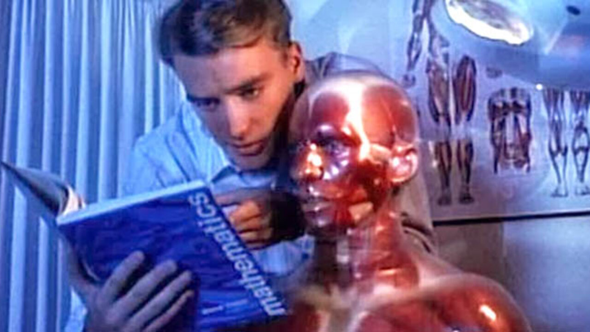

Bugün yakın bir zamanda izlediğim "Pin" filmi üzerine yazmak istedim. Bu filmde tüm senaryonun etrafında döndüğü şey, tıbbi amaçlarla kullanılan bir manken. Bu mankenin özelliği ise özellikle rasyonel olmak üzere verilen sorulara cevap verebilmesi. Filmin hikâyesi, ortalamanın üstünde zenginlikte olan 2 çocuklu bir ailenin, özellikle baba ve iki çocuğun "Pin" ile, yani konuşabilen tıbbi mankeni ile diyalogları etrafında gelişiyor.
Genel itibarıyla bu şekilde seyreden olay örgüsünün en dikkat çekici tarafı, çocukluk yıllarında asosyal olan ve hayatının geri kalanında bunu devam ettiren ailenin büyük çocuğu Leon'un, filmin başlarında da fark edilebileceği üzere sosyal ihtiyaçlarını Pin üzerinden karşılaması; diğer insanlarla filmin devamında da fark edilebileceği gibi ne cinsel ne de sosyal ihtiyaçlarını karşılamak üzere interaksiyonda bulunma güdüsünün bulunmadığı direkt göze çarpıyor.
"Şizofrenide korkulan şey, beyin tarafından yaratılan sanrının insanı telkinlerle emellere sürüklemesi ise; yapay zekâ kullanarak hareket eden biri, şizofreni hastası sayılabilir mi? Tabii ki de hayır."
Aslında bu filmin tamamında Pin ve Leon'un konuşmaları şizofreniden kaynaklı olabilse de asıl dikkat çeken nokta, insanoğlunun doğal olarak bilgi sahibi olana itaat etme içgüdüsünün yansıması olarak bu filmde Leon'un çocukluk yaşlarından itibaren babasının bile hastalarına bakarken bunu Pin'e sorduğunu görmesi gibi durumlardan ötürü hayatının geri kalanında bu varlığa itaat etme içgüdüsü geliştirmesi beklenir.
Dolayısıyla o dönemde lanetli veya sihirli olarak görülen o tıbbi manken, şu an Çinli bir şirketin birkaç hafta içerisinde geliştirebileceği ve aynen Pin gibi çocukların gelişiminde birçok alanda bulunabileceği göz önünde bulundurulduğunda; var olma istenci ile yanıp tutuşan bir gencin, kendini statülemek için bu varlıktan başka bir ihtiyacı kalmayacaktır.
Filmin sonlarında da aynen modern dünyada etikten kaçabilmek için savaşa AI'lerin dâhil edilmesi ve onların suçlu yapılması gözlendiği gibi, Leon'un kız kardeşinin sevgilisini öldürdükten sonra hiç düşünmeden "Bunu Pin yaptı." dediğini görebiliyoruz. Şizofrenide korkulan şey, beyin tarafından yaratılan sanrının insanı telkinlerle emellere sürüklemesi ise; yapay zekâ kullanarak hareket eden biri, şizofreni hastası sayılabilir mi? Tabii ki de hayır.
Sonuçta duyduğum ve gördüğüm sanrılar; benim beynimdeki biyokimyasal değiysel değişimlerin algılarımı değiştirmesinden değil, başka bir insanın beynindeki biyokimyasal değişimlerin algılarımı değiştirecek bir cihaz üretmesine sebebiyet verdiğinden oldu.